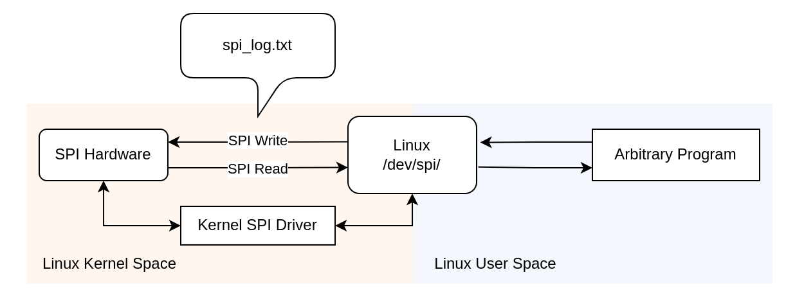
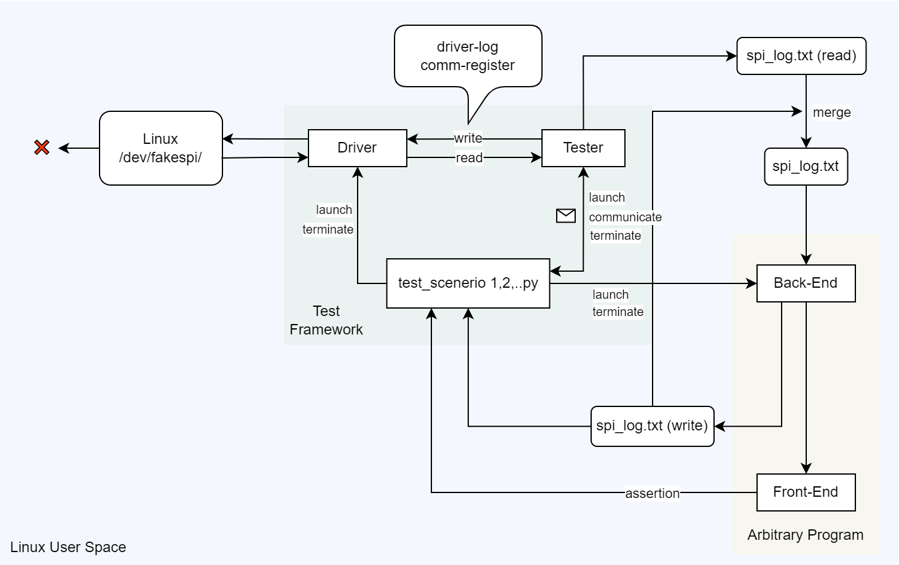
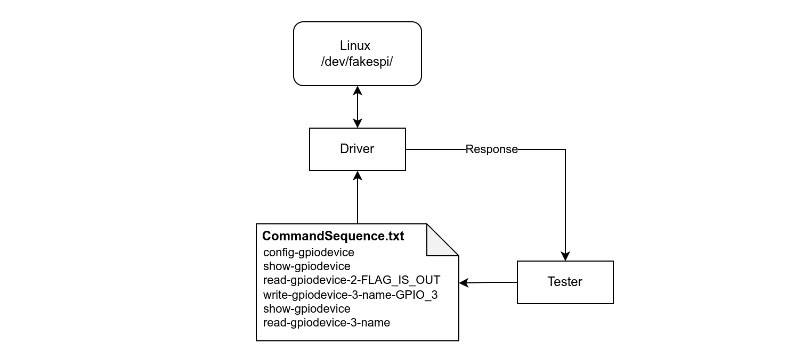
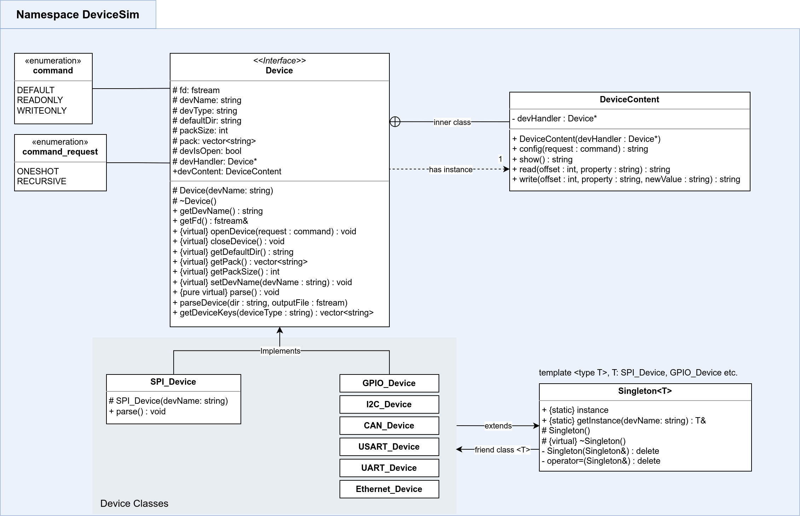
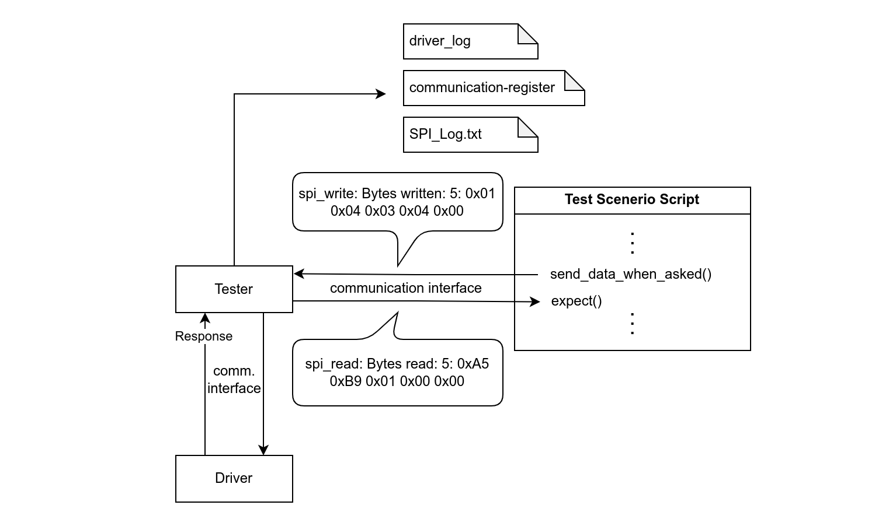
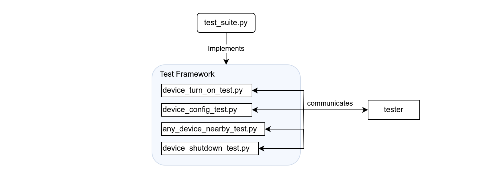
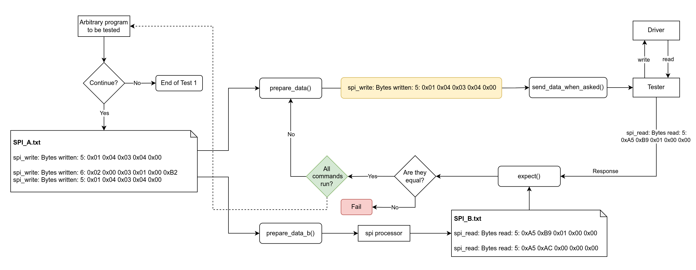
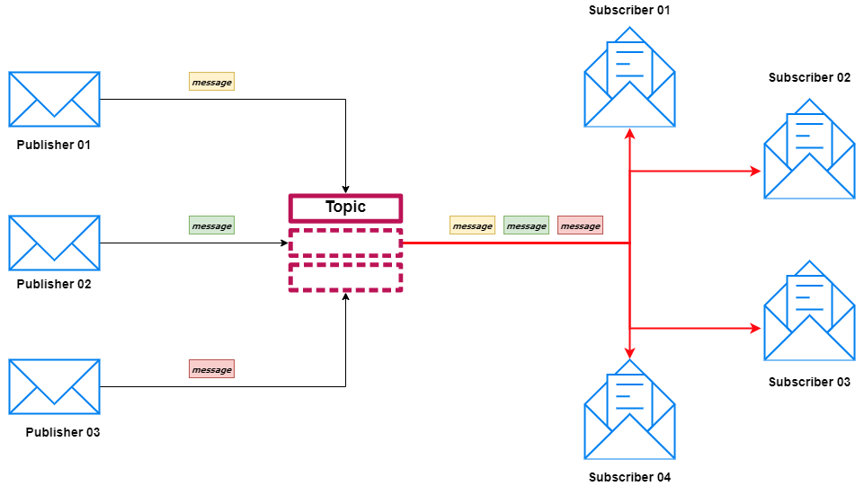
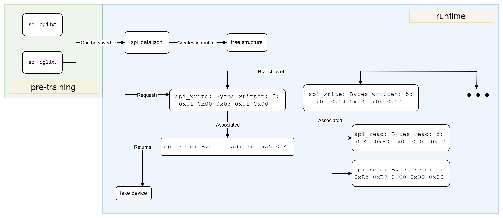

|
V1.0
|
Loading...
Searching...
No Matches
|
V1.0
|


The main objective of this project is to develop a software platform that enables the creation, manipulation, and use of virtual devices in the user space of an operating system. The goal is to make it easier for developers to create and test embedded software without having to use actual physical hardware. This will save time and resources and allow for more efficient and streamlined software development processes. The platform is designed to be flexible and user-friendly, making it accessible to a wide range of programmers who develop embedded linux applications. Virtual Device Simulator also includes features for automated testing and validation. This allows developers to automatically test communication between the embedded software and the virtual peripheral device, verify the accuracy of data transmission, and ensure the correct functioning of all software components with arrangable test scenerios while providing realistic log files for easy debug.
Linux, as an open-source operating system kernel, provides a unique and versatile structure for managing devices. Devices in Linux are treated as files and are accessed through file systems, illustrating the philosophy of "everything is a file." This structure includes various types of devices such as hard drives, RAM, USBs, printers, and even keyboards. The device files are typically housed in the "/dev" directory, each having specific permissions and ownership. Understanding Linux devices involves a comprehension of these file-based device interactions, the different categories of devices, and the permissions that control their accessibility. This foundational knowledge is key to effective system administration and troubleshooting within a Linux environment.
In the Linux operating scenario, an arbitrary program interacts with a device file, in this case "/dev/spi", located within the user space. This file essentially represents a physical SPI (Serial Peripheral Interface) hardware in the system. The communication between the user space and the kernel space is facilitated through the kernel's SPI driver. When the program writes to or reads from "/dev/spi", it is, in reality, communicating with the physical SPI hardware via this kernel SPI driver. The "/dev/spi" file acts as an interface between the program and the SPI hardware, encapsulating the complexities of hardware interaction. Any communication log generated in this process, such as spi_log.txt, records the intricate details of these transactions, providing valuable insights for debugging and system optimization purposes.

Real Device Operating Scenerio Schematic
In the scenario of a fake device operating within a Linux user space, a systematic and interactive process is automated. This process is initiated by a test framework, such as Robot Framework, that starts running different test scenarios sequentially. Each test scenario launches a driver and tester processes, which interact with each other to emulate the actions on the fake device.
The operation begins with the back end of an arbitrary program providing an SPI write sequence to the test scenario. This sequence is then sent to the tester process, which executes these SPI write commands through the driver. The driver, in turn, simulates actions on the fake device, like writing to the device. During this procedure, a log of communications between the driver and tester processes is created. This log, consisting of details such as driver-log and communication registers, is a valuable asset for later analysis and debugging.
Simultaneously, the tester process generates corresponding read lines for each write line. These read lines, when merged with the SPI write lines, form an SPI log. This log is sent back to the back end of the arbitrary program. Based on this SPI log, the front end of the arbitrary program can either manipulate the test process or allow the test to continue as per the scenario. This elaborate interplay between various components provides a high level of control and traceability for the testing process in a user space environment.

Fake Device Operating Scenerio Schematic
This guide will assist you in cloning, setting up, and running the project on your local machine for the purposes of development and testing.
In order to successfully install and run this project, you will need to ensure the availability of several tools and libraries on your local development environment. These include:
Please ensure all these prerequisites are met before proceeding to the installation of the project.
Using the bash script below, all the dependencies can easily be installed for Debian-based operation systems.
git clone (Later steps it is assumed you cloned repository to your home directory)The software generates several output files for debugging purposes. These files provide insights into the software's behavior and can be accessed within the runtime-environment directory.
runtime-environment/dev/spi/ directory during runtime.runtime-environment directory. These logs are helpful for debugging and understanding the software's execution.These output files serve as valuable resources for debugging and analyzing the software's performance and interactions with the simulated SPI device.
The software consists of several components and layers that work together to achieve its functionality, the main 3 of components are briefly:
The project includes the following directories, each serving a specific purpose:
~/driver/driver-unit-tests: Contains unit tests for the driver component.
Please note that the test source code is not up to date, currently being reworked and cannot be utilized in this version.
These directories and components collectively contribute to the functionality and structure of the software, enabling effective control, testing, and analysis of the simulated devices and their interactions.
The driver component in this software plays an important role in simulating and controlling the properties of virtual devices. Although it can be utilized and developed for various purposes, the driver in this specific project is primarily focused on handling writing operations for SPI devices. It is responsible for performing tasks such as writing data, reading data, and configuring the device.
The driver component operates within the dev/gpio or dev/spi directories, creating and manipulating virtual devices. In the current design, the driver is launched by the test script and maintained and communicated with by the tester component.
During the design stage, special consideration has been given to ensure the driver is memory efficient and maintainable. The intention is to facilitate further development and enhancements in a streamlined manner. In the current version, the driver accepts commands applied to the device as a sequence in its own unique format.
By focusing on writing operations for SPI devices and incorporating features for configuration and data exchange, the driver component enables efficient simulation and control of the virtual devices within the software.

Driver Working Schematic
In the internal structure, driver component exhibits a well-structured object-oriented programming (OOP) design, making use of the Singleton design pattern. The Driver class embodies the principles of encapsulation, inheritance, and polymorphism, which are fundamental to OOP. By implementing the Singleton pattern, the Driver ensures that only a single instance of itself can exist throughout the application. This design choice facilitates centralized access to the Driver's functionalities and prevents multiple instances from causing conflicts or duplications. The Singleton design pattern enhances code organization and promotes code reusability by providing a global point of access to the Driver instance. Overall, the Driver component showcases a simple and elegant OOP structure while incorporating the benefits of the Singleton pattern. UML Diagram can be examined below.

Driver UML Diagram
The tester component in this software serves a crucial function in managing the test system. It acts as an intermediary between the test scenario scripts and the driver, ensuring controlled and coordinated execution of the tests. The tester receives inputs from the test scenario scripts through the communication interface and passes them to the driver component in a controlled manner.
One of the important features of the tester is its ability to produce log files that aid in the debugging process. The log files, such as driver_log, communication-register, and SPI_Log.txt, are generated with timestamps. These log files not only facilitate efficient debugging but also provide valuable information to the program being tested, based on the responses received from the driver.
Internally, the tester component utilizes the SPI processor for various utilities. This includes functionalities such as retrieving the correct spi_read response corresponding to a spi_write command and converting real SPI commands to the driver's format. By leveraging the SPI processor, the tester enhances the overall functionality and effectiveness of the test system.
The tester component plays a critical role in ensuring proper coordination, logging, and communication between the test scenario scripts and the driver, ultimately contributing to the successful execution and evaluation of the software under test.

Tester Working Schematic
The test scenario scripts and test framework are vital components in the software's testing process. The test scripts define how scenarios are executed and under which conditions the fake devices are controlled based on specific embedded programs. The scenarios implemented in the test script utilize the functions provided by test_suite.py.
These test scripts communicate with the tester component through the communication interfaces, enabling the execution of test commands. Each test script represents a specific sequence of commands designed for a particular device, such as turning off the device or configuring it while connected to the computer.
To execute the test scenarios in a systematic and organized manner, the Robot Framework is employed. The Robot Framework allows for the execution of test scripts in a sequential order while providing comprehensive test logs. This framework facilitates the creation and execution of tests with ease, ensuring reliable and thorough testing of the software's functionality.
By combining the test scenario scripts, the test framework, and the communication interfaces, the software can be thoroughly tested under various conditions, generating comprehensive logs for analysis and debugging purposes. This robust testing process helps ensure the reliability and effectiveness of the software.

Test Scripting Schematic
Example Test Scenerio Script
The provided test1.py in project is an example of a test scenario script used in conjunction with our test framework. It demonstrates the interaction between the testing components, which consists of preparing data, running processes, and validating the output.
test1.py begins with the import of the test suite, from test_suite import *. This suite encapsulates various helper functions used throughout the test. It then sets up the remote_repository that points to the directory containing the program under test.
The script proceeds to run a test iteration, represented by the for loop with num_iterations set to 3. Within each iteration, it first prepares and sends data to tester using the prepare_data and send_data_when_asked functions. It verifies the response with the expect function, which validates the data received against expected results. The log files are then copied for later analysis using the copy_spi_log_to_destination function.
To ensure continuous testing, the continue_process function is called, allowing the next iteration to commence unless it's the final loop. The process is then halted using kill_assembly.
Once all iterations are completed, the script calls stop_process to stop the execution of the program under test, then closes all the necessary communication sockets with signal_listener.close(), data_listener.close(), and data_supplier.close().
Custom test scenarios can easily be generated based on test1.py. Simply copy test1.py, then adjust the data inputs, outputs, or interaction sequences to align with the new test requirements. By doing so, various scenarios can be rapidly developed, expanding the coverage of your software testing.

Example Test Working Schematic
The process communication within this project is facilitated through specialized interfaces developed in both C++ and Python. These interfaces are designed to enable seamless communication between different processes. They leverage the ZeroMQ (zmq) library and utilize the Subscriber and Publisher classes to implement topic/client communication through local addresses.
The process communication interfaces has a critical role in establishing efficient and reliable communication between various components of the software. They enable processes to exchange data and messages in a structured manner, ensuring synchronized operation and coordination.
The C++ and Python interfaces provide a convenient and standardized way for processes to subscribe to specific topics and publish messages to those topics. This mechanism allows for targeted communication between different components, promoting modularity and flexibility in the overall system design.
In the runtime of this project, process communication is utilized multiple times, as it forms a fundamental aspect of the multi-layered software architecture. The interfaces ensure smooth interaction and information exchange between the driver, tester, test scenarios, and other components, facilitating a cohesive and coordinated workflow.
By employing process communication interfaces based on ZeroMQ, the software achieves efficient and effective interprocess communication, enabling impeccable coordination and collaboration between various components within the runtime environment.
Example usage of the communication interfaces can be examined here
Logic of publisher - subscriber pattern communication is shown in the illustration below. Visit BMC Software for further knowledge about the pattern.

Subscriber Publisher Communication Pattern Logic [Illustration by BMC Software]
The Spi Processor Unit is the core component of the software, responsible for modeling the behavior of the SPI hardware. It plays a essential role in providing precise responses to SPI read requests based on the corresponding SPI write commands issued by the fake devices.
The Spi Processor Unit consists of a pre-training phase that allows it to learn the behavior of the actual SPI hardware. During this phase, you can provide it with actual data from the SPI Log, which can be obtained from a real hardware SPI process. By analyzing and saving the behavior to JSON files, the Spi Processor Unit learns how to accurately model the hardware's responses.
Developed primarily in Python, the Spi Processor Unit is accompanied by a C++ wrapper to ensure compatibility with both Python-originated test scenarios and C++-originated drivers or testers. The choice of Python for the core implementation was driven by its ease of use and flexibility.
After the pre-training phase, the Spi Processor Unit utilizes the spi_data.json file in the runtime. This file contains the necessary information in a structured format, allowing the Spi Processor Unit to provide continuous service for requests coming from any process within the project until termination.
The Spi Processor Unit acts as the heart of the software, enabling the faithful modeling of SPI hardware behavior and ensuring reliable and accurate responses in runtime.
Example usage of the SPI Processor C++ wrapper can be accessed here, providing practical demonstrations and instructions on how to utilize the C++ wrapper for seamless integration with other components of the software.

Spi Processor Working Schematic
The Spi Processor - Driver Utility is an integral component of the C++ part of the Spi Processor. Its main purpose is to provide conversion solutions for SPI commands from any format to the driver format. By performing these conversions, the utility enables the execution of commands by the driver component.
This utility has a vital role in ensuring smooth compatibility and communication between different components of the software. It acts as a bridge, allowing SPI commands from various formats to be understood and executed by the driver according to its specific format requirements.
By facilitating the conversion process, the Spi Processor - Driver Utility enables the software to handle and process a wide range of SPI commands. This enhances the versatility and adaptability of the software, ensuring compatibility with different SPI devices and formats.
The utility's capability to convert SPI commands to the driver format plays a crucial role in the overall functionality and effectiveness of the Spi Processor. It enables smooth communication and integration between the Spi Processor, driver component, and other parts of the software architecture, ensuring efficient execution of commands and reliable operation of the simulated SPI devices.
Furthermore, the Spi Processor - Driver Utility utilizes the JSON format to ease debugging and ensure structured command representations. For instance, a sequence of SPI commands, such as SPI_A, is converted to SPI_A.json and later processed to create SPI_A_processed.json. The converted JSON files can represent both single commands and multiple code sequences, providing flexibility in command application.
For example, SPI_A represents the following SPI commands:
The resulting SPI_A.json file would look like this:
Later, the SPI_A_processed.json file is created, which takes the following structure:
And then it is used with appropriate parsing operations in code.
It is a supporting component of the software architecture that enables easy customization and configuration of specific devices used in the system. By adjusting the YAML files associated with each device, located in the /runtime-environment/dev-config/config_yaml/ directory, users can modify properties, add or remove properties, or change default property values without the need to modify any code directly. Once the desired changes are made, running the device_config_creator.py script updates the corresponding JSON files in the /runtime-environment/dev-config/config_json/ directory. These JSON files serve as the default configurations for the driver component, ensuring that the driver utilizes the user-defined settings during runtime. This approach offers exceptional flexibility, allowing users to adapt the software to their specific requirements easily and directly, without the need for extensive code modifications. The Device Config Creator greatly enhances the configurability and maintainability of the system, making it easier to manage and customize the behavior of individual devices.
It is a simulated version of a potential program that may utilize and require SPI devices. Its main purpose is to generate random SPI commands for testing and evaluating the software during the development phase. This mock program can be toggled on or off, or continued, using the functions provided by the test scenarios implemented in the test scenario scripts. It serves as a valuable tool for testing the functionality and performance of the software, allowing developers to simulate different scenarios and observe the software's behavior with varying SPI command sequences.
Furthermore, the it stores the SPI logs generated during the tests after they are completed. These logs provide valuable insights and information about the communication between the mock program and the simulated SPI devices, allowing for detailed analysis and debugging. The SPI logs can be accessed and reviewed to verify the accuracy of the software's responses and ensure its proper functioning.
The mock structure of program to be tested significantly contributes to the development and refinement of the software, enabling comprehensive testing and evaluation of its capabilities in a controlled and simulated environment. By utilizing this mock program, developers can uncover potential issues, optimize performance, and ensure the reliability of the software when interacting with real SPI devices.
In this version of the project, the tests haven't been updated and cannot be used. Therefore, detailed explanations of the reliability tests will be added later on in the project. These tests are essential for ensuring the reliability and robustness of the software. They include unit tests, integration tests, and total software integration tests.
Unit tests of the driver component are designed to verify the correctness and functionality of individual units or components within the driver. These tests isolate specific parts of the driver and thoroughly evaluate their behavior and performance. By testing each unit in isolation, it becomes easier to identify and fix any issues or bugs, leading to a more reliable and stable driver component.
Integration tests of the driver component focus on validating the interactions and collaborations between different units or components of the driver. These tests ensure that the various parts of the driver work harmoniously together and produce the expected outcomes. Integration tests help uncover any integration-related issues, such as incompatible interfaces, incorrect data flow, or communication problems, which can affect the reliability of the driver.
Total system integration tests encompass the entire software system, including the driver component, tester component, test scenarios, and other related components. These tests evaluate the overall functionality, performance, and reliability of the software as a whole. By simulating real-world scenarios and executing comprehensive test cases, total software integration tests provide a holistic view of the software's behavior and its ability to meet the desired requirements.
Please note that in this version, the tests haven't been updated and cannot be utilized. However, they play a fundamental role in ensuring the reliability and effectiveness of the software, and detailed explanations of these tests will be added later in the project.
Comprehensive documentation of all the source code can be accessed the directory below in html format.
The project utilizes a range of technologies and frameworks, including the following latest versions:
Additionally, the project incorporates the following technologies and frameworks:
These technologies collectively contribute to the development and functionality of the project, ensuring efficient communication, robust testing, comprehensive documentation, and seamless integration within the development environment.
Please read Contributing for details on the code of conduct and the process for submitting pull requests.
This project uses SemVer for versioning. For the available versions, see the Versioning.
See the full list of contributors who participated in this project.
This project is licensed under the MIT License.